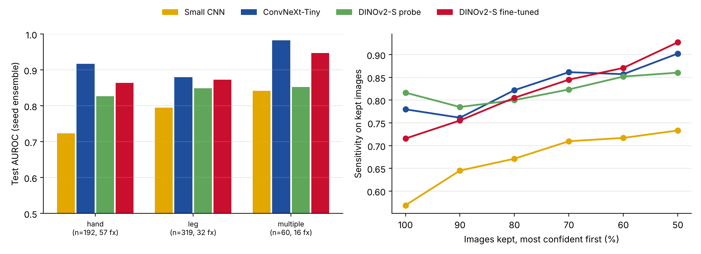

Experiment · Neural networks · Healthcare AI · Medical imaging
Pretrained ConvNeXt finds 81% of bone fractures at 90% specificity on FracAtlas, and knows when to ask
FracAtlas: how much does a pretrained backbone help on 4,083 X-rays, where do the models fail, and how often should they hand an image to a clinician?
By Muzammal Hussain · 21 November 2026 · Research update
A missed fracture on an X-ray means delayed treatment. FracAtlas is an open set of 4,083 hand, leg, hip and shoulder radiographs from three hospitals in Bangladesh, labelled by two radiologists and an orthopaedic surgeon, with boxes around every fracture. It was released without a classification baseline or a fixed test split, and most results on it are single runs reporting accuracy. We fixed a split, trained four classifiers three times each and a box detector, and asked what a reader would need to know before trusting one of them to triage images.
Key findings
- Pretraining matters most. ConvNeXt-Tiny, pretrained on ImageNet, reached test AUROC 0.922 ± 0.006 over three seeds and 0.928 [0.891, 0.957] as a seed ensemble. A small CNN trained from scratch reached 0.809; the paired gap is +0.118 [+0.086, +0.151].
- At 90% specificity ConvNeXt finds 81% of fractured images, against 44% for the small CNN.
- DINOv2's features are strong but its fine-tuning is unstable. Frozen, with only a linear probe, it reached 0.873. Fine-tuned, its seeds ranged from 0.823 to 0.903; ConvNeXt's stayed within 0.917 to 0.929.
- Leg X-rays are the weak point. ConvNeXt's AUROC is 0.918 on hands but 0.880 on legs, and at its threshold it finds only 17 of 32 leg fractures. Leg images are 15 of its 24 misses.
- The best model is also the one most often sure. At a confidence cut-off of 0.8 ConvNeXt refers 10% of images to a clinician; the small CNN would refer 45%. Referring the least confident fifth raises ConvNeXt's accuracy on the rest from 0.906 to 0.961.
Setup
The split is 70/15/15, stratified by fracture label and body region with a fixed seed: 2,855 training, 614 validation and 614 test images (109 fractured). The four classifiers are a small CNN trained from scratch, ConvNeXt-Tiny (ImageNet-22k), and a DINOv2 ViT-S/14 either frozen with a logistic-regression probe or fine-tuned end to end. A YOLO11s detector was trained on the fracture boxes. Every choice (early stopping, decision threshold, temperature for calibration, released weights) was made on the validation set; test intervals come from 1,000 bootstrap resamples. The run took about two hours on one Kaggle T4 GPU.

Results
| Model | AUROC, 3 seeds | Ensemble AUROC [95% CI] | Sens. at 90% spec. | Referred at confidence < 0.8 |
|---|---|---|---|---|
| Small CNN | 0.791 ± 0.039 | 0.809 [0.763, 0.852] | 0.44 | 45% |
| ConvNeXt-Tiny | 0.922 ± 0.006 | 0.928 [0.891, 0.957] | 0.81 | 10% |
| DINOv2-S, frozen probe | 0.873 | 0.873 [0.833, 0.909] | 0.64 | 36% |
| DINOv2-S, fine-tuned | 0.872 ± 0.043 | 0.902 [0.865, 0.934] | 0.74 | 25% |
The detector, used as an image classifier through its highest box score, reached AUROC 0.882, but its boxes are only moderately accurate (mAP@0.5 of 0.321 on test images that include non-fractured ones). In a tool, the classifier is better at deciding whether there is a fracture and the detector at pointing to where.
What this means
On a dataset of this size, start from a pretrained convolutional backbone: it is better, more stable between runs and better calibrated than the alternatives we tried. Referral helps, but mostly by removing false alarms; many of the missed leg fractures are made with high confidence and would not be referred. A threshold tuned for leg images, or more leg data, is the next step before such a model could be useful for triage.
Limitations
FracAtlas has no patient identifiers, so the split is by image, and images of one patient may sit in both training and test data; this can inflate every FracAtlas result, ours included. All images come from three hospitals in one country, with no external test set. Hip-only and shoulder-only groups have two test fractures each. This is research software, not a medical device.
Data: Abedeen, Rahman, Prottyasha, Ahmed, Chowdhury and Shatabda (2023), FracAtlas: a dataset for fracture classification, localization and segmentation of musculoskeletal radiographs, Scientific Data 10, 521 (CC BY 4.0).